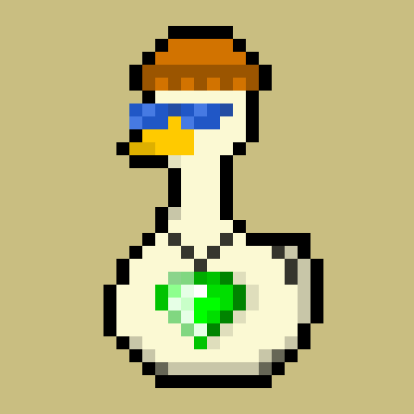
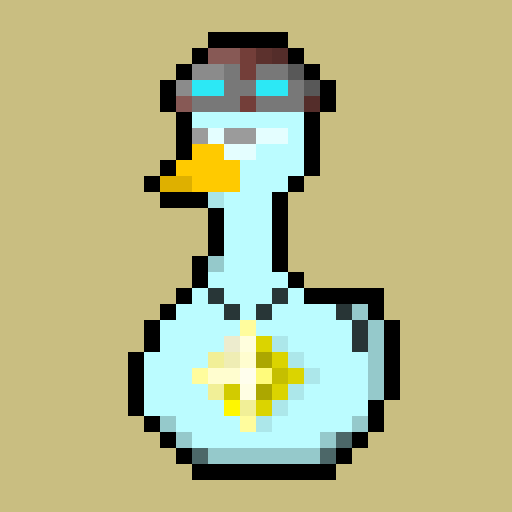
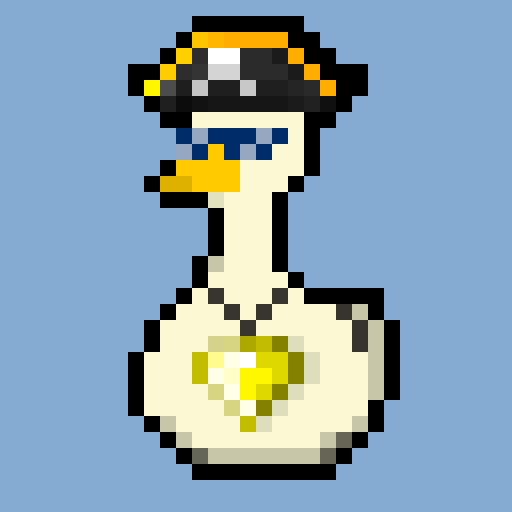

Добро пожаловать в Ducks WIKI

Что такое TON Ducks?
10 000 уникальных, коллекционных уток с
подтверждением права собственности на блокчейне
The Open Network
WIKI для NFT-коллекции?
Да, а почему нет, в этом справочнике о нашей
коллекции вы найдете информацию по большинству
уток, о том кто они к какому роду принадлежат,
также здесь можно сделать для своей утки
пасспорт,и написать ей историю.


Закрытые клубы уток
Здесь можно вступить в закрытые клубы уток,
например если у вас утка пират, вы можете
вступить в закрытый клуб пиратов, или имея
коричневую утку можете вступить закрытый клуб
гетто